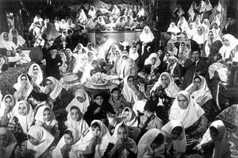

|
|

از نگاه يک زن
مجلس حرمسرادارها و حرمسرا نشين ها
شکوه میرزادگی
جمعه8 شهریور 1387
ژيلا بنی يعقوب، روزنامه نگار پر تلاش ايرانی و يکی از زنان برابری خواه جنبش زنان ايران، مطلبی دارد در سايت خود به نام «ما روزنامه نگاريم». او در اين مقاله، در واقع، افشا کرده است که حدود پنجاه در صد نمايندگان مجلس هشتم دو زنه هستند، و همين افراد نيز هستند که سفت و سخت به لايحه ی «حمايت خانواده!» چسبيده اند. ژيلا، از قول برخی از دوستانش، می پرسد که وقتی اين ها خودشان دو تا زن دارند اصرارشان در تصويب اين لايجه از چه روست؟ و نيز گزارش می دهد که برخی هم می گويند با اين اصرار می خواهند کار خود را توجيه کنند.
من اما فکر می کنم که ماجرا یر سر زن سوم و چهارم و چهلم است. يعنی، حالا که دومی را ـ احتمالاً با اجازه ی اولی، و احتمالاً با توسری زدن يا تحميق ـ از زن بدبخت اول گرفته اند، مانده اند که دومی را چطوری راضی کنند؟ بعد هم نوبت به سومی می رسد و بايد فکر آنجا را هم کرد. بهترينش هم قانونی کردن چند زنی است، با همه ی اماها و چراهائی که به شوخی نزديک تر اند.
همچنين، در مطلب ژيلا بنی يعقوب، لينکی وجود دارد به وبلاگ فخری محتشمی، که اخيراً با گروهی از زنان اصلاح طلب رفته و با نمايندگان فراکسيون اقليت در مجلس ديدار کرده ست و، در واقع، او است که خبر غير رسمی دو زنه بودن 65 تن از مردان مجلس را از خانم زهرا شجاعی دريافت داشته است. در همين ديدار محتشمی با خانم آليا، نماينده ی مجلس، هم روبرو شده و دريافته که ايشان هم با لايحه ی چند همسری موافق است و در برابر اعتراض محتشمی گفته است: «شما همه اش بیانیه می دین، شعار می دین، مصاحبه می کنین، محکوم می کنین... اگر اعتراض داريد نظر کارشناسی بدهيد. ما نظر کارشناسی لازم داريم!»
حالا خانم های اصلاح طلب بدوند دنبال نظر کارشناسی کسانی که مورد قبول نمايندگانی باشند که نيمی شان حرمسرادار هستند و نيمی شان حرمسرا نشين.
بنظر می رسد که مردهاشان با دوره ی قاجار فرقی نکرده اند اما زن هاشان يک فرق برجسته با زنان حرمسراهای قاجاری دارند و آن هم اينکه علاوه بر تعزيه ديدن و سفره ی حضرت عباس انداختن و شيون و گريه و گيس کندن، گاهی هم، برای اين که دلشان باز شود، سری به مجلس شورای اسلامی می زنند، مجلسی که مطابق خبر روزنامه ها، برخی از نمايندگان مردش بجای نطق قبل از دستور، با آواز بلند روضه می خوانند.